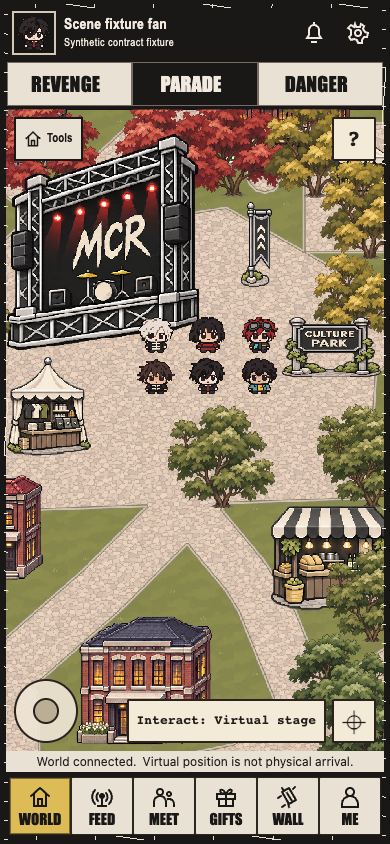
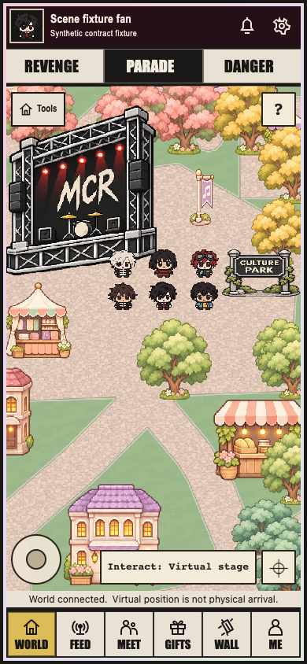
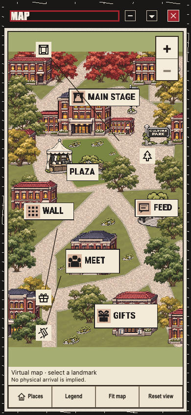
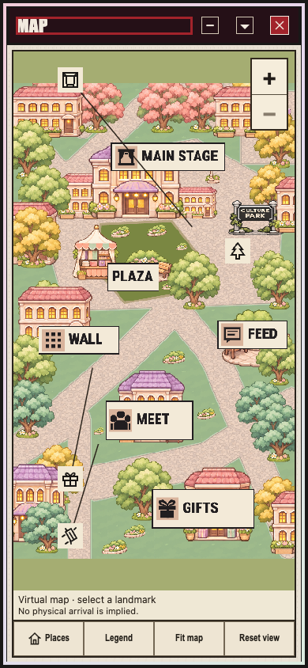

Actual PARADE390 BEFORE / AFTER
Observed: Both AFTER scenes look substantially warmer, more playful and cuter. Map olive fit bands and dark plum surround remain residual backdrop details. This is a bounded saved-image assessment, not full QA06 acceptance.
Target: cuter backgrounds than BOTH collage/currentUI, warm/playful/cozy backdrops and ornaments only. Characters/rendering/crop/framing/sizing and controls/text/type/layout/focus/contrast/guards remain frozen.
Detailed comparison and limitations · Exact source/time/image pins. No new browser/native/test/capture work or HTML runtime acceptance.
World
7c25078f118da53dd9a524d0a58e707cca190f0f
4e491a4509e9cab6a3e28364db616bdab9c157f5
Clearly warmer, more playful and visibly cuter in this saved PARADE390 comparison; bounded qualitative improvement, not full QA06 acceptance.
- Upper dark-red canopy becomes clustered pink blossom trees; right-side foliage shifts toward soft yellow and light green.
- Small stalls gain peach/pink-striped canopies, warmer lit windows, flower pots and lighter decorative wood/stone colors.
- Lower building gains pastel purple roof, cream facade, warm windows and flower detailing; scene lawn is softer and brighter.
- A pale pink outer trim and dark plum backdrop replace the harsher scratched black surround while readable cream controls remain.
Residual: The large black concert stage remains the strongest dark foreground object. It is retained music/foreground context, not a request to repaint text, characters or controls. Dark plum header/surround remains visually dark; this is a residual backdrop observation, not evidence that every background area now satisfies the all-ten direction.
Map
7c25078f118da53dd9a524d0a58e707cca190f0f
4e491a4509e9cab6a3e28364db616bdab9c157f5
Pastel scene background is materially cuter and cozier than the BEFORE and the dark collage. This is a two-frame qualitative judgment for PARADE390 only.
- Dark/red northern canopy becomes pink blossom trees; central building changes from dark brick/roof to warm cream with pink/lilac roof and lit detailing.
- Side buildings and stalls gain coral/pink/purple roofs, peach canopies and warm yellow windows; flowers and tiny ornaments add a playful setting.
- Muted dark trees shift to lighter green, mint and yellow groups, making the path network feel softer.
- The shared outer trim is paler and the dark surround shifts to plum; service plaques remain readable against the brighter scene.
Residual: Flat olive fit bands above and below the Map artwork remain visibly plain and comparatively muted; the exposed backdrop did not receive the same playful detail as the scene art. The black/dark-plum surround and beige utility strip retain a restrained rather than broadly playful backdrop treatment. These residual observations do not authorize typography/control/layout changes.
Same exact collage, superseding background instruction
The collage is retained foreground/function context. Reproducing its dark palette is no longer the background target.

Root characterRGBA/camera/label/link/44px/oracle/game/socket results are owner evidence, not independently rerun. Actual default Root/Places/Phaser, synthetic fixtures only; no live/device/IN/admission/allten acceptance. Other widths continue in Root existing job untouched.